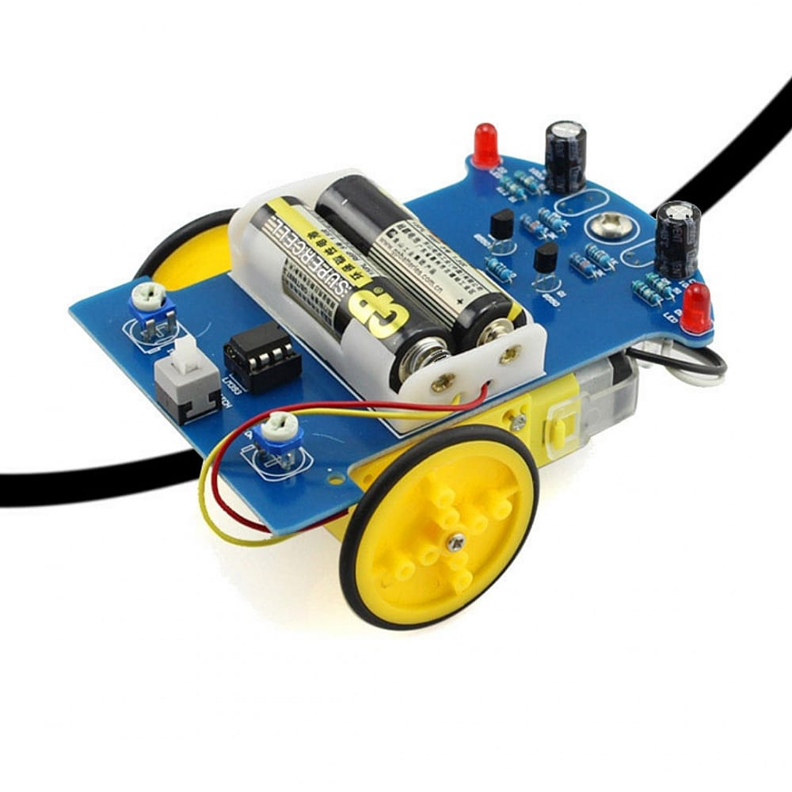
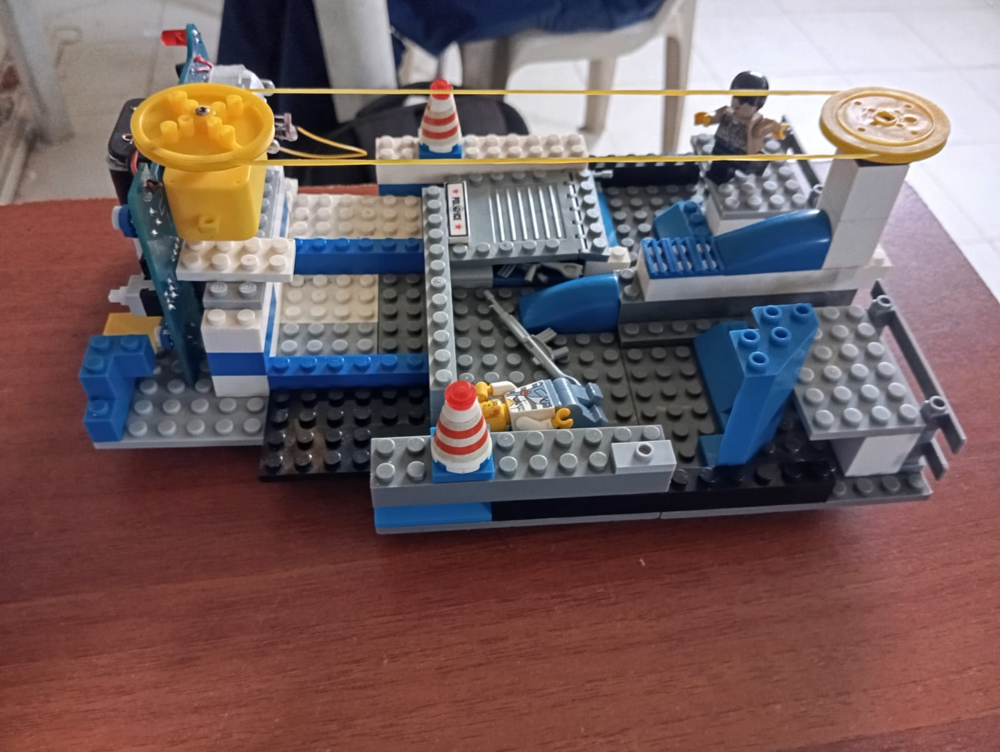
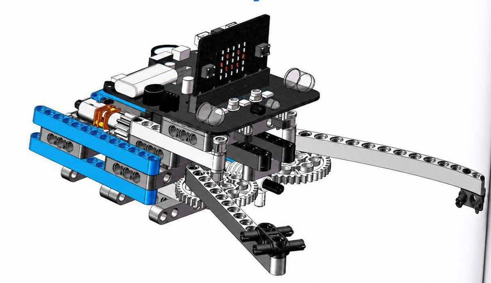

Contador de vehículos con micro:bit
Proyecto de grado
ARCHIVO DIGITAL
“Los años pasan, las etapas terminan, pero los recuerdos, aprendizajes
y momentos compartidos permanecen para siempre.”
5 proyectos · 5 experiencias interactivas
Explorar archivo
desplázate
01 — Electrónica programable
Nombre del proyecto
Problema o necesidad
Objetivo
Descripción de la solución tecnológica
Funcionamiento
Dificultades encontradas
Conclusiones
Integrantes
¿Qué es micro:bit?
Micro:bit es una placa electrónica pequeña y programable, del tamaño de una tarjeta, creada para enseñar de forma práctica los fundamentos de la programación y la electrónica. Combina sensores, luces LED, botones y conectores en un solo dispositivo listo para experimentar.
Sirve para crear proyectos interactivos como juegos, medidores de temperatura, contadores de pasos, controles remotos y robots. Se programa mediante bloques o código, lo que la hace accesible tanto para principiantes como para estudiantes con más experiencia.
Visitar micro:bitCaracterísticas principales
- Matriz de 25 luces LED programables
- 2 botones de entrada (A y B)
- Sensores de movimiento, luz y temperatura
- Brújula digital y radio inalámbrica
- Conector USB y pines de entrada/salida
Juego con micro:bit: contador de vehículos
Así se comportaría el programa en la placa: el botón A registra una moto, el botón B registra un carro, y presionando A + B al mismo tiempo se muestra el resultado en la matriz de LEDs.
A
B
🏍️
Motos
0
🚗
Carros
0
🚦
Total
0
Presiona A para sumar una moto, B para sumar un carro y A + B para mostrar el resultado.
También puedes usar las teclas A y B del teclado.
Ficha del proyectoProyecto 01
Registrar de forma sencilla la cantidad de motos y carros que pasan por un punto, evitando llevar el conteo manual.
Crear un contador interactivo que use los botones de micro:bit para registrar vehículos y mostrar el total.
Se utiliza una placa micro:bit programada con botones A y B, una matriz LED y una lógica de conteo.
A suma una moto, B suma un carro y A+B presenta el resultado. El sitio web simula la misma lógica.
Definir la lógica de los botones, controlar los valores del contador y lograr una respuesta clara en la matriz LED.
El proyecto demuestra cómo una placa pequeña puede convertir una necesidad cotidiana en una solución programable e interactiva.
Jeronimo Caro Alfonso — 11D
02 — Lenguaje de programación
Nombre del proyecto
Problema o necesidad
Objetivo
Descripción de la solución tecnológica
Funcionamiento
Dificultades encontradas
Conclusiones
Integrantes
¿Qué es Python?
Python es un lenguaje de programación fácil de leer y escribir, utilizado para crear programas, automatizar tareas repetitivas, desarrollar aplicaciones y páginas web, analizar datos y trabajar en inteligencia artificial. Es uno de los lenguajes más usados en el mundo por su simplicidad y versatilidad.
hola_mundo.py
print("Hola mundo")¿Qué hace este código?
La instrucción print() le dice a Python que muestre un texto en pantalla.
Todo lo que se escribe entre comillas dentro del paréntesis es el mensaje que aparecerá
como resultado. Es el primer programa que casi todos escriben al aprender a programar.
Mini editor interactivo de Python
Escribe una instrucción print() y presiona “Ejecutar” para ver el resultado.
Salida
>>> Presiona "Ejecutar" para ver el resultado
Mini juego
Puntos: 0/3Reto Python: ¿qué imprime?
Elige la salida correcta. Completa las 3 preguntas para superar el reto.
print("Hola")
Selecciona una respuesta.
Ficha del proyectoProyecto 02
Mini laboratorio de programación en Python
Comprender la lógica de programación de manera práctica, comenzando con instrucciones sencillas y observando sus resultados.
Aprender conceptos básicos de Python mediante ejemplos, edición de código y ejecución de pequeños programas.
Se creó un mini editor web que interpreta ejemplos básicos de print y operaciones numéricas para simular una experiencia de programación.
El usuario escribe una instrucción, selecciona un ejemplo o ejecuta el código y recibe una salida en pantalla.
Interpretar entradas de texto, controlar errores y diseñar una interfaz sencilla que permita experimentar sin instalar programas.
La práctica interactiva facilita entender que programar consiste en dar instrucciones precisas y comprobar sus resultados.
Jeronimo Caro Alfonso — 11D
03 — Robótica autónoma
Nombre del proyecto
Problema o necesidad
Objetivo
Descripción de la solución tecnológica
Funcionamiento
Dificultades encontradas
Conclusiones
Integrantes
Robot seguidor de línea
Es un robot diseñado para seguir automáticamente una línea marcada en el suelo, generalmente negra sobre un fondo blanco, utilizando sensores que detectan el contraste entre los dos colores.
Sirve para aprender de forma práctica conceptos de robótica, programación, uso de sensores y sistemas autónomos. Es uno de los proyectos más usados en la educación en tecnología porque combina electrónica, mecánica y lógica de programación en un solo montaje.
Sensores
Infrarrojos de reflectancia, detectan el contraste entre la línea y la superficie
Motores
Motores DC controlados de forma independiente en cada rueda
Control
Un microcontrolador compara las lecturas y ajusta la velocidad de cada motor
Detección
Si el sensor detecta la línea, el robot corrige su dirección para mantenerse sobre ella

Robot seguidor de línea — proyectoSimulador: mantén el robot en la línea
Usa las flechas ◀ y ▶ del teclado (o los botones) para mantener el robot sobre la línea el mayor tiempo posible, esquivando los obstáculos.
Puntos: 0
Tiempo: 30s
Ficha del proyectoProyecto 03
Robot seguidor de línea
Automatizar el desplazamiento de un robot por una ruta marcada sin que una persona tenga que dirigirlo continuamente.
Construir un robot capaz de detectar una línea y corregir su trayectoria de forma autónoma.
El sistema combina sensores infrarrojos, motores DC y un microcontrolador que procesa las lecturas para decidir hacia dónde moverse.
Los sensores detectan el contraste de la pista. Según la lectura, el controlador modifica los motores para mantener el robot sobre la línea.
Calibrar los sensores, ajustar la velocidad de los motores y mantener una estructura alineada para evitar desviaciones.
El proyecto permite comprobar cómo sensores, programación y movimiento pueden trabajar juntos para lograr autonomía.
Jeronimo Caro Alfonso — 11D
04 — Automatización con LEGO
Nombre del proyecto
Problema o necesidad
Objetivo
Descripción de la solución tecnológica
Funcionamiento
Dificultades encontradas
Conclusiones
Integrantes
Cinta transportadora de LEGO
Una cinta transportadora es un sistema mecánico que permite mover objetos de un lugar a otro de manera continua y automática, sin necesidad de trasladarlos manualmente.
Se utiliza ampliamente en procesos industriales para clasificar, transportar y organizar productos en líneas de producción, almacenes y sistemas de empaque. En una versión hecha con LEGO, el mismo principio se recrea a pequeña escala: un motor mueve una banda apoyada sobre engranajes y rodillos, trasladando piezas u objetos pequeños de un extremo a otro.
MotorGenera el movimiento giratorio que impulsa toda la cinta
BandaSuperficie continua sobre la que se transportan los objetos
EngranajesTransmiten y regulan la fuerza del motor hacia los rodillos
EstructuraPiezas LEGO que sostienen y alinean todo el sistema
SensoresPueden detectar objetos para detener o activar la cinta

Cinta transportadora LEGO — proyectoMini juego
Puntos: 0Clasifica los paquetes
Haz clic en el botón correcto antes de que cada paquete llegue al final de la cinta.
📦
Presiona iniciar para comenzar.
Ficha del proyectoProyecto 04
Cinta transportadora de LEGO
Transportar objetos de un punto a otro de manera continua, reduciendo el traslado manual y mostrando el principio de una línea automatizada.
Construir una maqueta funcional que represente el movimiento de materiales mediante una banda impulsada por un motor.
Se combinan piezas LEGO, engranajes, rodillos, una banda y un motor para crear un sistema de transporte a pequeña escala.
El motor transmite movimiento a los engranajes y rodillos; la banda se desplaza y lleva los objetos de un extremo al otro.
Alinear engranajes, mantener la tensión de la banda y conseguir un movimiento continuo sin atascos.
La maqueta permite entender de forma visual cómo la mecánica y la automatización se integran en procesos de transporte.
Jeronimo Caro Alfonso — 11D
05 — Manipulación robótica
Nombre del proyecto
Problema o necesidad
Objetivo
Descripción de la solución tecnológica
Funcionamiento
Dificultades encontradas
Conclusiones
Integrantes
Robot con pinzas
Un robot con pinzas es un robot equipado con un mecanismo de agarre capaz de sujetar, levantar y trasladar objetos de un lugar a otro. La pinza es el "extremo" del robot que entra en contacto directo con lo que se quiere manipular.
Se usa en robótica educativa y en la industria para tareas como recoger piezas, clasificar productos, ensamblar componentes o trasladar objetos en espacios donde sería difícil o peligroso hacerlo manualmente.
Brazo robóticoEstructura articulada que posiciona la pinza en el espacio
PinzaMecanismo final que abre y cierra para sujetar objetos
MotoresControlan el movimiento del brazo y el cierre de la pinza
SensoresAyudan a detectar la presencia y posición de los objetos
ControlUn microcontrolador coordina cada movimiento del sistema

Robot con pinzas — proyectoSimulación de la pinza
Presiona los botones para controlar el movimiento del brazo y la pinza.
Estado: pinza abierta, sin objeto
Mini juego
Estado: 0/3Misión: rescata el objeto
Completa la secuencia: abre la pinza, agarra el objeto y suéltalo para terminar la misión.
1. Abrir2. Agarrar3. Soltar
Misión pendiente.
Ficha del proyectoProyecto 05
Robot con pinzas
Manipular y trasladar objetos pequeños de manera controlada, especialmente en tareas repetitivas o difíciles de realizar manualmente.
Diseñar un sistema que permita mover un brazo y una pinza para sujetar, trasladar y soltar objetos.
El prototipo combina una estructura articulada, motores, una pinza y un sistema de control para coordinar los movimientos.
El usuario controla la apertura y cierre de la pinza. Al agarrar el objeto, el mecanismo lo mantiene sujeto hasta recibir la orden de soltarlo.
Lograr que la pinza cierre con precisión, coordinar los movimientos y mantener el objeto estable durante la manipulación.
El proyecto muestra cómo la robótica puede facilitar tareas de manipulación y cómo el control preciso es clave para que un mecanismo sea útil.
Jeronimo Caro Alfonso — 11D